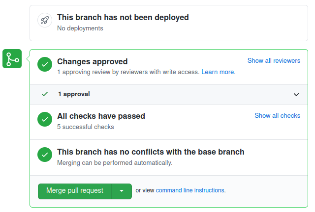

Working with contributions
As documented in the Workflow section, all code and documentation contributions to Hexatomic are made via pull requests from branches or forks, while other types of contributions may not.
Pull requests can come from within the Hexatomic core development team that works on branches in the Hexatomic repository (internal pull requests), or from others that have forked the Hexatomic repository and work on branches in their repository copy (external pull requests).
Maintaining pull requests
The maintainer is in charge of supervising pull requests from their creation to the point when they are merged into the target branched, or dismissed and closed.
It is recommended to turn on notifications for pull requests, e.g. by changing the notification settings with the "Watch" button in the upper right corner of the GitHub interface.
Communication with the creator of the pull request
Communication with the creator of the pull request is by far the most important task in pull request maintenance. Communication should be timely, and in line with the Hexatomic Code of Conduct.
The primary aim of communication in pull requests is to ensure that the contribution is suitable for merging into Hexatomic, and of sufficient quality.
The secondary aim of communication is to provide a welcoming, helpful, appreciative experience for the contributor, that helps to build a community around the software.
Evaluating contributions
The contribution must be evaluated in terms of
- suitability, e.g.:
- Is the contribution going into the right place?
- Does it have the right scope?
- Is it of the right size, or should it be split into different pull requests?
- Does it do what it is meant to do?
- Will it improve Hexatomic?
- quality, e.g.:
- Is the contribution free of security issues, bugs, code smells and style issues?
- Is the contribution well-tested?
- Will the contribution introduce regressions?
- Is the contribution documented?
Evaluation is done through different tools:
- communication to clarify suitability and help fulfill non-functional requirements
- automated testing by the continuous integration workflows that run automated tests on all pull requests
- manual testing and code review to evaluate functional requirements
- static code analysis to evaluate quality
Manual testing of pull requests
In addition to the automated tests run by the continuous integration pipeline, all pull requests must be manually tested. The steps for manual testing depend on whether the pull request is internal or external. The reason for this is that external pull requests should never be afforded the same level of trust as internal pull requests, i.e., pull requests from the core contributors.
Manually testing external, untrusted pull requests
- Code review on GitHub: Perform a code review of every single change on GitHub before doing anything else with the pull request.
This is because external pull requests may contain malign changes, e.g., the continuous integration workflow, or any portion of code, could have been changed to expose secrets such as API or access tokens. - Test a local checkout of the pull request: Check out the pull request locally by cloning its source repository into a new local directory, and pulling and switching to its source branch. You may then use the IDE to review the changes and their interrelations and context more comfortably together with the view on the changes that GitHub provides.
- Build and run the pull request version of Hexatomic locally: Build Hexatomic locally, run it, and test the new functionality manually. Report any issues to the pull request on GitHub as comment in the pull request discussion.
Manually testing internal, trusted pull requests
To avoid potential duplication of code review, you may change the manual testing steps for internal pull requests as follows.
- Review a local checkout of the pull request: Check out the pull request locally by pulling and switching to its source branch. Use the IDE to review the changes and their interrelations and context comfortably, based on the list of changes on GitHub.
- Build and run the pull request version of Hexatomic locally: Build Hexatomic locally, run it, and test the new functionality manually. Report any issues to the pull request on GitHub as comment in the pull request discussion.
Manual regression tests
The update functionality of Hexatomic can't be tested automatically. In addition to manually checking the changes of the pull request, you should therefore also check that
- that there is a status in the lower toolbar ("Hexatomic is up to date") on start up which shows that the update check has been executed, and
- that clicking on the Help menu item, and then Update, triggers another manual update check (the status message in the toolbar should be highlighted by changing its color for a moment).
In case that the pull request is related to the update functionality itself or updates the target platform, you should test that updates can be performed successfully.
Moving pull requests forward
Pull requests should have a maximally short life-span. The maintainer should help moving pull requests forward by completing their tasks in a timely fashion. If a pull request stalls, they should inquire what they can do to help, to move it forward towards merging. If a pull request is orphaned, the maintainer can decide to adopt and complete it themself, or find other contributors to complete it. Alternatively, it should be closed with a comment that explains the reasons for closing.
Merging pull requests
The way that pull requests are merged into their target branch depends on their type.
- Pull requests that provide hotfixes, i.e., repair functionality that is broken rather than provide
new or change existing functionality, must not be merged from the GitHub UI directly. This is
because they target the
mainbranch, which only contains released code. Therefore, code that goes into themainbranch must be formally released, which cannot be done from the GitHub UI. Instead, refer to the section about releasing hotfixes to learn how to do this. - Pull requests that target the
developbranch must not necessarily be released on merge. Instead, code changes from different pull requests can be bundled into a release. Therefore, it is safe to merge the pull request from the GitHub UI by clicking the green Merge pull request button (see figure below).
Requirements for merging
You must only merge pull requests
- that have undergone code review, have been approved by the reviewer, and have no unresolved questions or change suggestions;
- that have passed static code analysis;
- that have passed all CI workflows;
- for which all tasks on the pull request checklist have been completed;
- for which copyright, license and citation information are complete.

Maintaining contributions that are not code contributions
People can contribute to Hexatomic without creating a pull request. Such contributions can be feature requests, bug reports, code reviews, user testing, organizing events, writing or talking about Hexatomic, asking questions, etc. These contributions should be treated on par with pull requests and maintained just as timely and conscientiously. Also, non-code contributions should be attributed and credited.